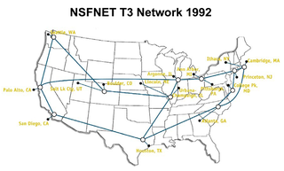
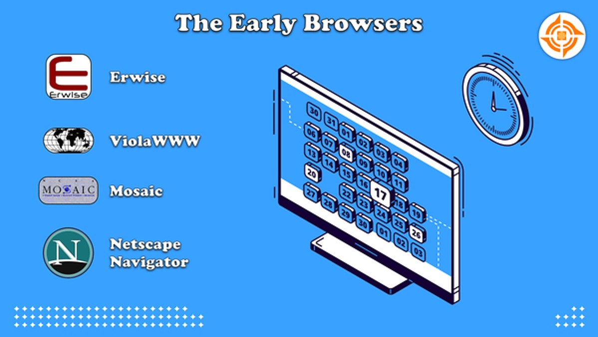
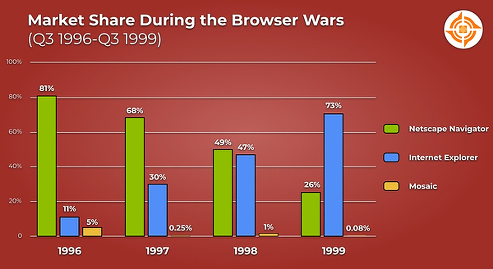
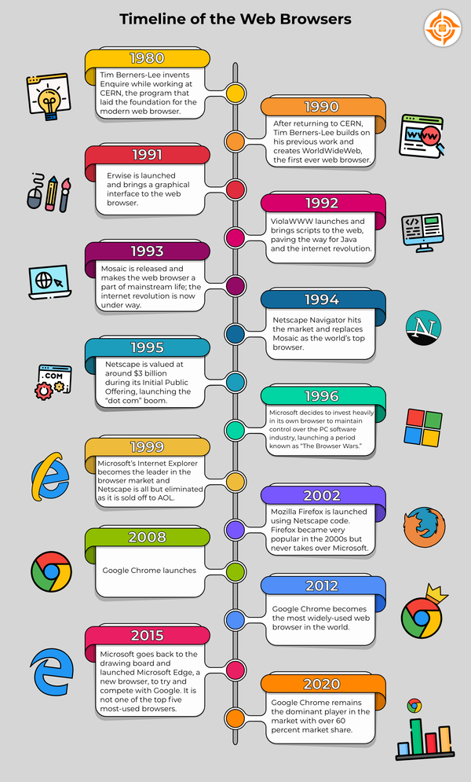
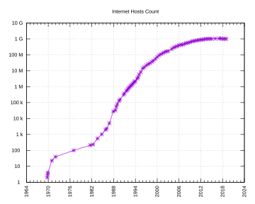

The Birth and Evolution of the World Wide Web
Table of Contents:
Early Beginnings:
- Tim Berners-Lee’s Vision (1989): Tim Berners-Lee, a British scientist at CERN (European Organization for Nuclear Research), invented the World Wide Web to address the need for automated information-sharing among scientists globally. CERN, a hub for over 17,000 scientists from more than 100 countries, required robust communication tools for effective global collaboration. Berners-Lee proposed a "web" of hypertext documents accessible via a browser, introducing key technologies:
- HTML (Hypertext Markup Language): Established the structure for web pages.
- HTTP (Hypertext Transfer Protocol): Facilitated the transfer of web pages.
- URLs (Uniform Resource Locators): Enabled the location of web resources.
Image of Tim Berners-Lee:

Image credit: CERN, Source Website
Initial Proposals and Development:
- First Proposal (March 1989): Berners-Lee proposed a global information system to integrate scattered information.
- Second Proposal (May 1990): This proposal, formalized with Robert Cailliau in November 1990, described a "hypertext project" called "WorldWideWeb," outlining concepts and terminology for a network of hypertext documents viewable through "browsers."
Early Implementation:
- First Web Server and Browser (End of 1990): Berners-Lee set up the first Web server and browser at CERN on a NeXT computer. The machine had a label stating: "This machine is a server. DO NOT POWER IT DOWN!!" The early web page linked to CERN’s resources and included a keyword-based search facility, as search engines did not yet exist.
- Web Browser Features: The original Web browser on NeXT computers included capabilities for viewing and modifying pages, introducing early web editing.
Expansion and Browser Diversity:
- First US Web Server (December 1991): Paul Kunz and Louise Addis brought the first US web server online at the Stanford Linear Accelerator Center (SLAC) in California.
- Browser Types:
- Original Development Version: Sophisticated but available only on NeXT machines.
- Line-Mode Browser: Simple to install on any platform but limited in functionality.
- Community Contributions: Berners-Lee’s call for developers led to the creation of browsers such as MIDAS by Tony Johnson from SLAC, Viola by Pei Wei from O'Reilly Books, and Erwise by Finnish students from Helsinki University of Technology.

Image credit: T3 NSFNET Backbone, c. 1992, Source Website
{kind=link}
Mosaic and Web Growth:
- Mosaic Release (Early 1993): The National Center for Supercomputing Applications (NCSA) released Mosaic, the first browser with a window-based interface and support for multiple platforms, including PC and Macintosh. Mosaic's user-friendly design accelerated the WWW’s growth.
- European Commission Project (1993): The European Commission approved its first web project (WISE) with CERN as a partner.
- Free Software Release (April 1993): CERN made the WorldWideWeb source code available royalty-free, fostering growth.
- Early Statistics: By late 1993, there were over 500 web servers, and the WWW accounted for 1% of internet traffic.

The “Year of the Web” (1994):
- First International WWW Conference (May): Held at CERN, attended by 380 users and developers, dubbed the “Woodstock of the Web.”
- Second Conference (October 1994): Held at CERN, attended by 380 users and developers, dubbed the “Woodstock of the Web.”
- Web Statistics: By the end of 1994, the Web had 10,000 servers (2,000 commercial) and 10 million users. Traffic was equivalent to shipping the entire collected works of Shakespeare every second.
Key Developments:
- HTML and CSS:
- HTML (1991): Established the basic structure for web pages.
- CSS (Cascading Style Sheets) (1994): Introduced by Håkon Wium Lie, CSS allowed advanced styling and layout.
- JavaScript (1995): Developed by Brendan Eich at Netscape, JavaScript added interactivity to web pages, enhancing user experiences.
The Browser Wars:
- Mosaic (Early 1990s): Developed by Marc Andreessen and Eric Bina, Mosaic was the first browser to display images inline with text and introduced bookmarking.
- Netscape Navigator (1994): Gained popularity for its user-friendly interface, speed, and features like cookies and JavaScript, playing a key role in the web's commercialization.
- Internet Explorer (Late 1990s - Early 2000s): Dominated the market due to bundling with Windows, reaching over 90% market share. Introduced features like ActiveX controls and underwent significant updates.

Rise of Modern Browsers:
- Google Chrome (2008): Introduced the V8 JavaScript engine, greatly improving performance, and featured sandboxing technology for enhanced security. Innovations included the Omnibox and extensive developer tools.
- Mozilla Firefox (2002): Known for its extensibility through add-ons, focus on privacy, and promotion of open web standards, challenging Internet Explorer’s dominance.
- Safari (2003): Apple’s default browser for macOS and iOS, featuring the WebKit engine, which improved rendering speed and efficiency.
- Brave Browser: Focuses on privacy by blocking ads and trackers by default and introduces Basic Attention Tokens (BAT) for user rewards while maintaining privacy.

Current Trends:
- Responsive Web Design (2010): Popularized by Ethan Marcotte, enables websites to adapt to different screen sizes and devices.
- Single Page Applications (SPAs): Load a single HTML page and dynamically update content, supported by technologies such as AJAX and frameworks like React and Angular.
- Serverless Computing: Allows developers to build and run applications without managing servers, using services like AWS Lambda and Azure Functions for scalability and reduced infrastructure management.
Future Possibilities:
- Web4.0 and Beyond: Future iterations might integrate advanced AI and machine learning for a highly personalized web experience.
- Quantum Computing: Potential to solve complex problems currently intractable for classical computers, impacting areas such as cryptography and data analysis.
- Global Internet Access: Projects like Starlink aim to provide global internet coverage through satellite constellations, reducing the digital divide and offering high-speed internet to remote areas.
Open Standards and Ongoing Development:
- WebCore Proposal: CERN proposed the "WebCore" project to form an international consortium with MIT.
- Formation of W3C (1994): Tim Berners-Lee joined MIT to establish the International World Wide Web Consortium (W3C) to maintain the Web as an open standard.
- European W3C Hosts:
- INRIA (April 1995): The first European W3C host.
- Keio University (1996): Became the W3C host in Asia.
- ERCIM (2003): Took over from INRIA as the European W3C Host.
- Beihang University (2013): Became the fourth W3C Host.
Number of Internet hosts worldwide: 1969–2019:

How Search Engines Work
Search engines are complex systems that help users find information on the web. They operate through a series of steps, including crawling, indexing, and ranking. Here's an overview of each process:
1. Crawling
Crawling is the process by which search engines discover new and updated web pages. Search engine bots, also known as crawlers or spiders, browse the web and follow links from one page to another. They collect data about these pages and their content.
- Discovery: Crawlers use algorithms to find new pages by following links from known pages.
- Content Extraction: The crawlers extract content from the pages, including text, images, and metadata.
- Site Maps: Websites often provide XML sitemaps to help crawlers discover all their pages more efficiently.
2. Indexing
Indexing is the process of storing and organizing the content collected during crawling. Once a page is crawled, its content is analyzed and added to the search engine's index—a vast database that stores information about web pages.
- Content Analysis: Search engines analyze the content to understand its relevance and categorize it.
- Storage: The content is stored in the index, along with metadata and information about its context and relevance.
- Retrieval: The indexed data is used to respond to user queries by retrieving relevant pages.
3. Ranking
Ranking determines the order in which pages appear in search results. Search engines use complex algorithms to evaluate and rank pages based on various factors, including relevance, authority, and user experience.
- Relevance: Pages are ranked based on how well their content matches the search query.
- Authority: Pages with high-quality backlinks and strong authority are ranked higher.
- User Experience: Factors such as page load speed, mobile-friendliness, and usability affect rankings.
- Freshness: Updated and recent content may be prioritized for queries seeking current information.
In summary, search engines use a systematic approach to crawl the web, index the content, and rank pages to deliver the most relevant search results to users.
CSS History
CSS was created HÃ¥kon Wium Lie to allow web designers to change the layout, colors, and fonts of their websites. Originally, websites were meant to be used by researchers only, so the decoration did not matter. However, when websites became widespread, the need to make them look nice grew.
The Timline of CSS
- 1994- HÃ¥kon Wium Lie proposed the idea of CSS.
- 1996- The first version of CSS was invented.
- 1998- CSS 2 was released and work on CSS 3 began. CSS 3 was very different from the other versions, fot instead of being a single monolithic specification, it was published as a set of separate documents known as modules. Each module dealt with a relatively small subset of the overall specification, and either added new features or refined and extended existing features. All additions and enhancements to the specification were written in order to be backward-compatible with older versions of CSS.
- 2011- CSS 2.1 was released, which fixed the errors found in CSS 2
- 2011–2013- Introduction of key modules like Flexbox, Transitions, Transforms, and Animations. Media Queries became mainstream for responsive design. Text effects like text-shadow and word-wrap.
- 2014–2016- Flexbox (2014): Standardized implementation of the Flexible Box Layout (display: flex), improving responsive design. Viewport Units: vw, vh, vmin, vmax for responsive sizing. CSS Variables (Custom Properties): Introduced in 2016 to define reusable styles with --custom-property syntax. Grid Layout (Experimental): Early implementations of the CSS Grid Layout.
- 2017–2018- CSS Grid (2017): Fully supported across modern browsers, offering a powerful way to create two-dimensional layouts. Feature Queries: @supports for checking feature availability. Enhanced Flexbox Features: Improved alignment (justify-content, align-items, align-self). Scroll Snap (2018): scroll-snap-type for controlling scrolling behavior.
- 2024 and Ongoing- Animation Enhancements: Introduction of @keyframes and new animation techniques like scroll-driven animations. Custom Units: Continued exploration of custom units for better responsiveness. Interoperability Improvements: Focus on browser consistency and interoperability. Sustainability Metrics: Media queries for energy preferences like prefers-reduced-data.
The at-rule
The at-rule is a statement that provides CSS with instructions to perform or how to behave. Each statement begins with an @ followed directly by one of several available keywords that acts as the identifier for what CSS should do. This is the common syntax, though each at-rule is a variation of it.
For more info Check the link bellow:
https://css-tricks.com/the-at-rules-of-css/Key Takeaways:
- The World Wide Web began with a vision to integrate computers, data networks, and hypertext into a global information system.
- Early development saw crucial contributions from CERN, SLAC, and various developers worldwide.
- The release of Mosaic and the establishment of open standards accelerated the Web’s growth.
- The Web’s expansion in the early 1990s laid the foundation for its widespread adoption and continuous evolution.